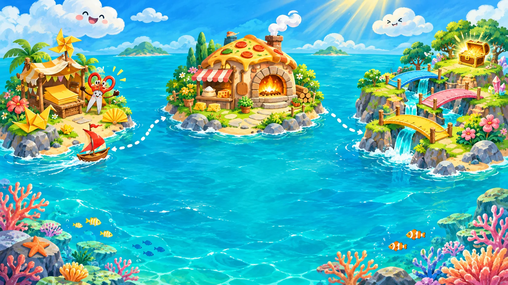

三座島・六個小任務
分數藏寶島
幫船長找回藏寶圖！

完成一島，拿一張地圖碎片 ✦
船長在等你上船！
在三座島完成短任務，取得能在下一島使用的道具。遇到困難可以再試，寶藏等著你。
🔎 每題先自己想。答對後會得到觀念線索；答錯時，船長會給你提示。
進度存在這台裝置的瀏覽器中，下次用同一台裝置可以接著玩。
幫船長找回藏寶圖！

在三座島完成短任務，取得能在下一島使用的道具。遇到困難可以再試，寶藏等著你。
🔎 每題先自己想。答對後會得到觀念線索；答錯時，船長會給你提示。
進度存在這台裝置的瀏覽器中，下次用同一台裝置可以接著玩。